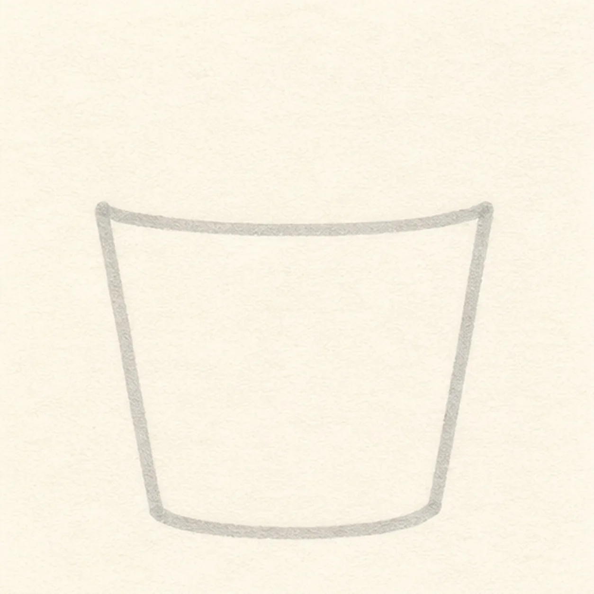
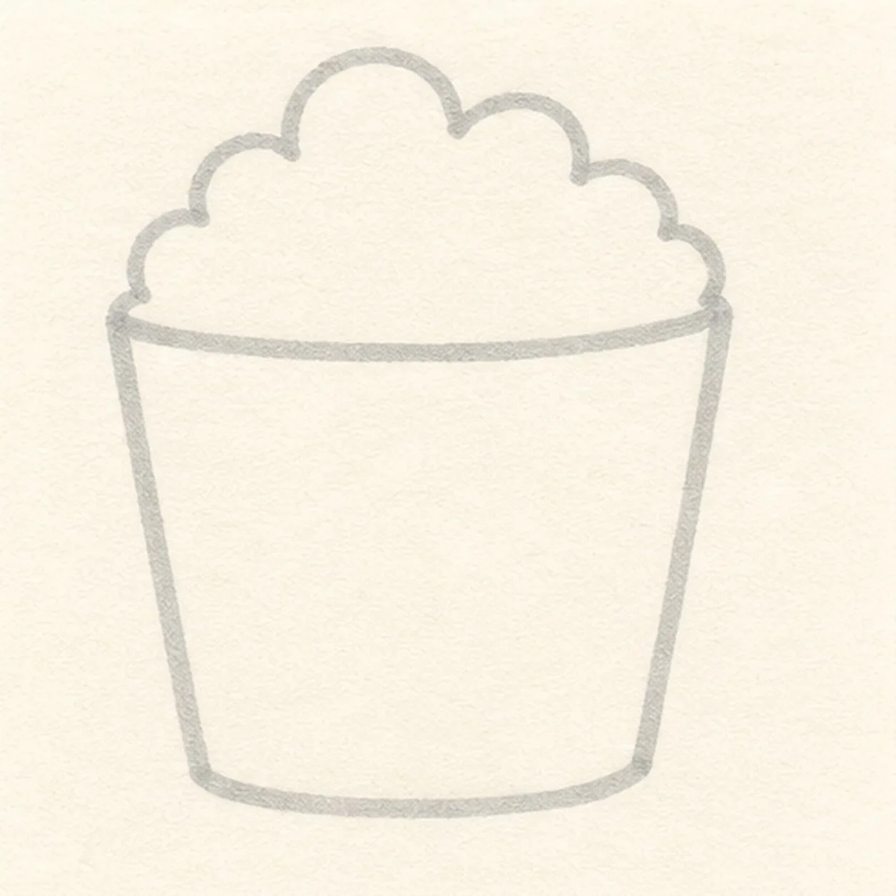
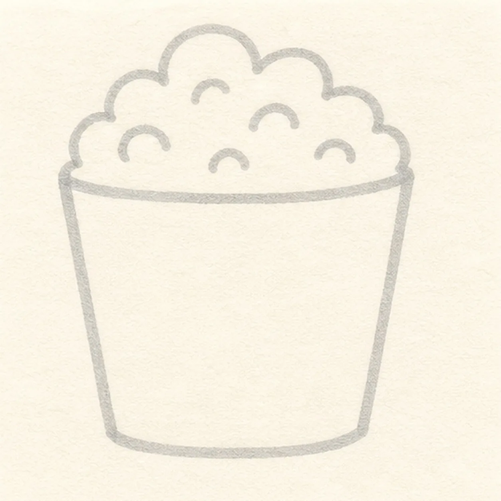
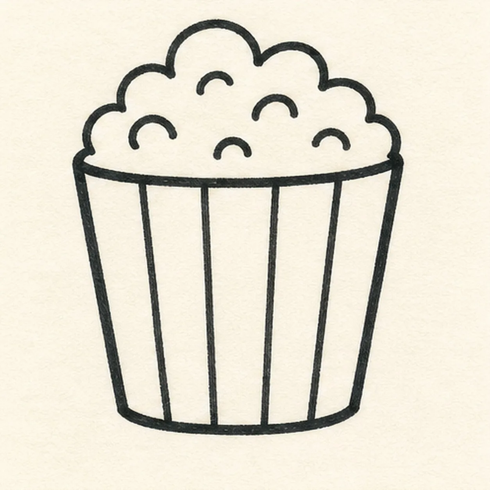
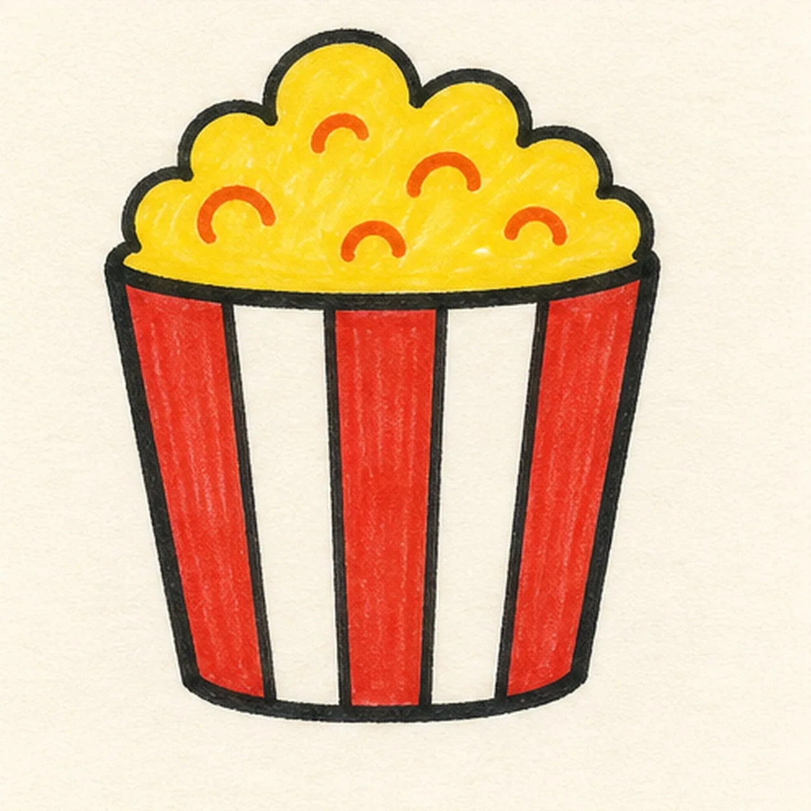

Felt-tip marker mode
Let's draw a cartoon popcorn bucket
Treat this as one playful practice round: sketch the idea loosely, simplify the shapes, then commit with confident marker outlines and bright fills.
-
01

Block the bucket
Draw a light tapered bucket shape, then curve a shallow rim across its top.
Doodle tip: Ghost both side edges before committing. Let them lean inward by the same amount so the bucket does not accidentally become a flowerpot.
-
02

Pile up the popcorn
Build a rounded popcorn cloud above the established rim with a row of varied bumpy curves.
Doodle tip: Vary the bumps a little instead of repeating perfect half-circles. Uneven lobes make the popcorn feel softer and more hand-drawn.
-
03

Divide the kernel lobes
Add a few small inner curves inside the existing popcorn cloud to suggest separate kernels.
Doodle tip: Leave generous open spaces between the inner curves. A handful of marks reads better than outlining every single kernel.
-
04

Ink the stripes
Trace the established bucket and popcorn with thick black marker, then draw three vertical stripe bands down the existing bucket body.
Doodle tip: Turn the page if needed and pull each stripe in one confident stroke. Keeping the stripe edges loose but parallel gives the bucket its comic rhythm.
-
05

Fill the movie-night colors
Fill the existing stripe bands red, the popcorn yellow, and add tiny orange accents inside the established kernel lobes.
Doodle tip: Fill from the outline inward and let the marker streaks follow the bucket's height. Dry each area before a second pass so the paper stays clean.
-
06
Make the popcorn pop
Tidy the existing outlines, stripe edges, kernel lobes, and the red, yellow, and orange marker fills.
Doodle tip: Stop before adding a face, a soda, or tickets. The oversized popcorn cloud and bold stripes already make the doodle feel playful.